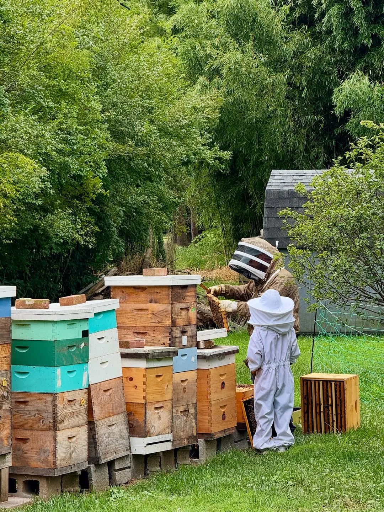
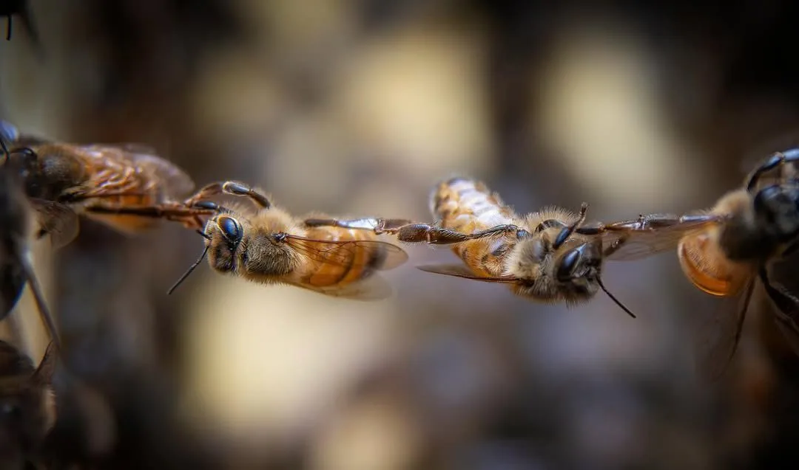
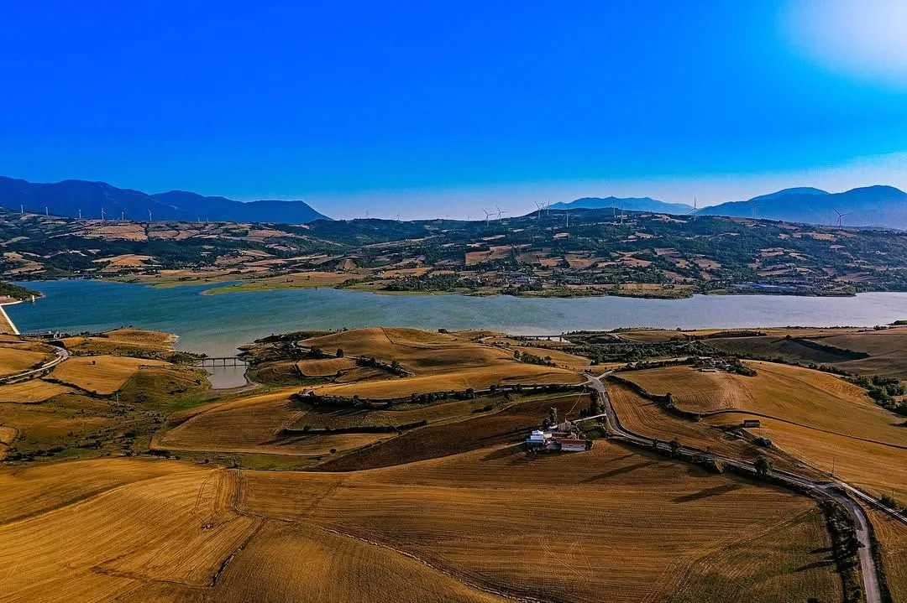
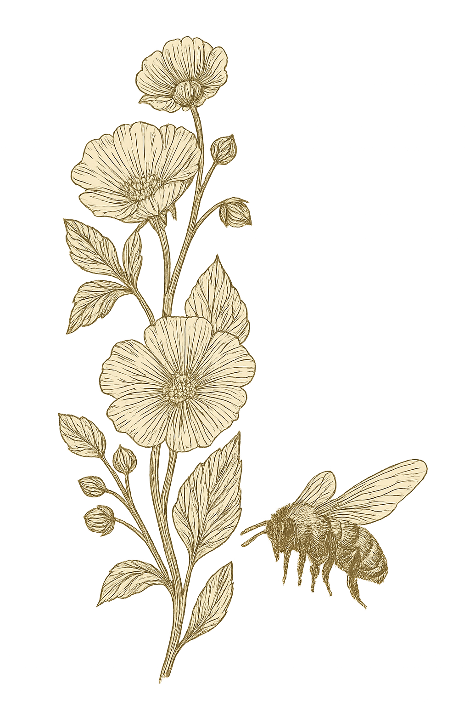

Le Origini: La Scienza
Vie del Lago nasce da una visione che unisce l'eleganza del mondo enologico alla rigorosità della ricerca scientifica. Non parliamo di un'eredità folkloristica o di una pratica tramandata per semplice consuetudine: parliamo di un progetto fondato su basi accademiche, studi in Agraria e una profonda comprensione dei sistemi biologici.
Qui l'apicoltura non è romanticismo, ma analisi, zonazione e osservazione delle dinamiche vegeto-climatiche. Ogni decisione — dalla disposizione degli apiari al monitoraggio delle fioriture — nasce da un approccio metodico, che considera l'alveare come un laboratorio vivente in cui si riflette l'integrità botanica dell'ambiente circostante.
Il nostro obiettivo non è «fare miele», ma interpretare un ecosistema, tradurlo in un micro-lotto di assoluta identità territoriale e custodirlo con la precisione di chi studia la natura prima ancora di raccoglierla.

La Scelta Stanziale: Il Cru
In un mercato dominato dalla pratica del nomadismo, Vie del Lago compie una scelta controcorrente: l'apicoltura stanziale. Non spostiamo le api. Non rincorriamo le fioriture di altre regioni. Non mescoliamo nettari di origini diverse.
Proprio come accade per i single vineyard nelle grandi zone vitivinicole, ogni alveare è un interprete fedele di un'unica porzione di territorio. Il suo miele è l'istantanea precisa di quella fioritura, di quella stagione, di quelle condizioni climatiche.
Questa scelta limita la produzione, ma amplifica il valore. È così che nasce il nostro Miele Cru: identitario, geograficamente tracciabile, unico per micro-lotto.

Il Suolo e il Lago: Il Terroir
Conza della Campania è un luogo raro: un'area di confine biologico dove il substrato argilloso, la vicinanza del lago e l'assenza di agricoltura intensiva creano un mosaico vegetale incontaminato.
L'argilla trattiene umidità e micronutrienti, influenzando la fisiologia delle piante e, di conseguenza, la composizione del nettare. Il risultato è una materia prima che possiede una sua struttura, una sua complessità e una sua espressione territoriale riconoscibile.
È questo equilibrio tra geologia, microclima e integrità vegetale a rendere possibile un miele che non è semplice «dolcezza», ma una lettura liquida del paesaggio.
«Un miele che non vuole essere replicabile, ma irripetibile.
Custodiamo la voce autentica del territorio.»
